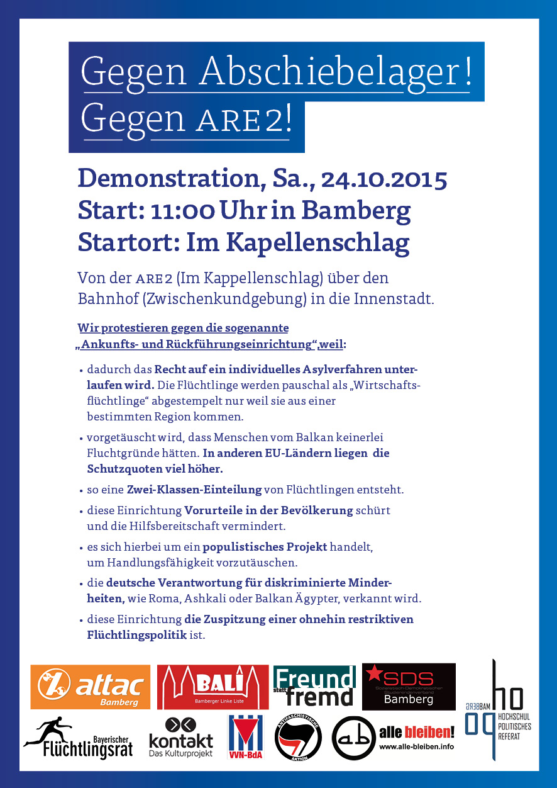

Archiv für Oktober 2015
Eine vom bürgerlich-zivilgesellschaftlichen Bündnis „Schweinfurt ist bunt“ organisierte Kundgebung unter dem Motto „Asyl ist Menschenrecht“ findet ab 10 Uhr auf dem Georg-Wichtermann-Platz (ehemals Postplatz) statt.
Die fremdenfeindliche Kundgebung „Schweinfurt wehrt sich – Asylmissbrauch nein danke – Wir sind das Volk“ wurde vom Marktplatz auf den Schillerplatz verlegt und soll dort um 11 Uhr beginnen.
Wir rufen alle AntifaschistInnen dazu auf, ihren Protest lautstark und entschlossen zu den RassistInnen zu tragen. Da auch mit gewaltbereiten Neonazis zu rechnen ist, solltet ihr euch möglichst nur in Gruppen in der Stadt bewegen.
Kein ruhiges Hinterland für Neonazis und RassistInnen! Antifa in die Offensive!
Wie der Facebook-Seite „Schweinfurt wehrt sich – Asylmissbrauch nein danke“ zu entnehmen ist, planen Neonazis und andere RassistInnen am Samstag, den 17. Oktober 2015, eine Kundgebung auf dem Schweinfurter Marktplatz. Beginnen soll diese um 11 Uhr.
Auf den Mobilisierungsflyern für die Kundgebung ist Harald Bestehorn, Bundestagskandidat für die NPD in Bayreuth, als Verantwortlicher im Sinne des Presserechts benannt. Hieraus wird ersichtlich, dass es sich bei dieser und zahlreichen anderen Kampagnenseiten und BürgerInneninitiativen gegen vermeintlichen „Asylmissbrauch“ um Tarnorganisationen der NPD und anderer Nazis handelt, um bis weit in die bürgerliche Mitte hinein rassistische Ansichten zu transportieren und salonfähig zu machen.
Zusagen bekannter und reisefreudiger Neonazis wie etwa von Nadine Hofmann und Andreas Groh (beide „Die Rechte“ Bamberg) oder Dan Eising („Die Rechte“ Nürnberg / „Nügida“) liegen bereits vor. Jedem/r Teilnehmer/in an dieser Veranstaltung muss deshalb klar sein, dass es sich dort um eine von zum Teil gewaltbereiten Neonazis organisierte und unterstützte Kundgebung handelt.
Vor dem Hintergrund brennender AsylbewerberInnenunterkünfte und rassistischer Mobilisierung (auch durch die bayerische Regierungspartei CSU) werden wir eine solche Provokation keinesfalls hinnehmen. Wir rufen dazu auf, sich den Nazis am Samstag entgegenzustellen und deren Kundgebung mit vielfältigen und kreativen Mitteln zu begleiten.
Rechte Hetze stoppen, den rassistischen Normalzustand durchbrechen! Solidarität mit allen Geflüchteten!
Antifaschistische Koordination Schweinfurt